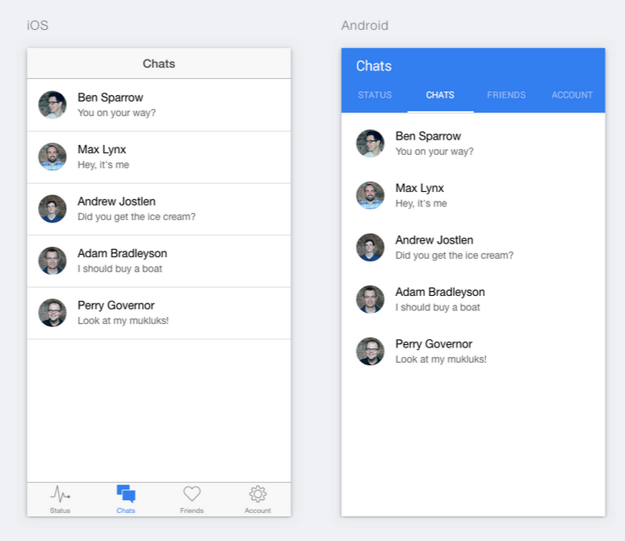
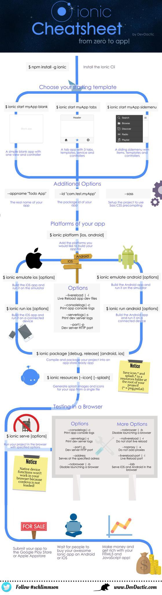
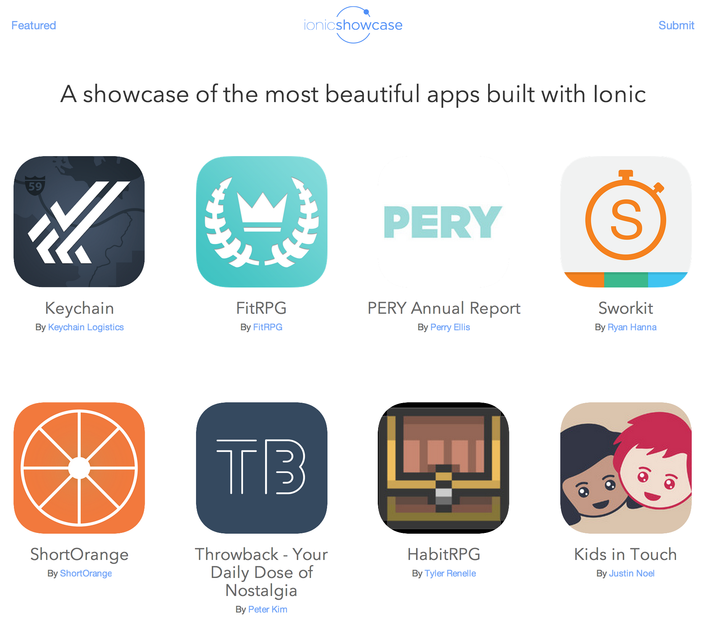

用 Angular 和 Ionic 构建混合应用
大纲
- 原生 VS 混合应用
- Ionic 入门
- Ionic UI 组件
- Ionic 生态
- Demo - 理财账户
原生 VS 混合
“我们要搞个移动应用！”
原生应用的缺点
- 需要掌握各个平台的语言框架
- 完全分离的代码库
- 需要很长的开发时间
更多移动设备平台，意味着更多问题


Why are we still coding for multiple platforms?
“那有什么替代方案吗？”

- Hybrid Apps: HTML5 that acts like native
- Phonegap 重命名为 Cordova
- Web 运行时打包在原生的壳中
- 通过桥协议直接访问设备的原生接口
- 以我们更熟悉的 Web 前端的开发方式
- 只需使用单一的代码库 (web platform)
“哦不！Zuck 说 h5 sucks”

http://techcrunch.com/2012/09/11/mark-zuckerberg-our-biggest-mistake-with-mobile-was-betting-too-much-on-html5/
我们是不是要开发 facebook app？
- 有数以万刀的预算 ?
- 有大量的原生应用开发者?
- 这个App有亿级别的营收压力？
- 如果是， 那就选 native 吧
- ...但是到了今天， native 和 hybrid 不是非黑即白的
“混合应用太慢了！”
“时代在变，今非昔比了'”
移动设备在快速发展！
| Year | Device | Processor | RAM |
|---|---|---|---|
| 2007 | iPhone | 620 MHz | 128 MB |
| 2010 | iPhone 4 | 1 GHz | 512 MB |
| 2015 | iPhone 6 | 1.4 GHz dual-core | 1 GB |
Web 标准也在快速发展！
- caniuse.com 要利用好！
- Android 的 Webview 现在是基于 chromium
- iOS 用户的设备系统总是保持最新

https://mixpanel.com/trends/#report/ios_8/from_date:-141,report_unit:day,to_date:0
https://mixpanel.com/trends/#report/android_os_adoption
可恶的 Android OEM!
Intro Ionic
“Hello.”
使用熟悉的 Web 标准


(You'll feel right at home)
http://www.google.com/trends/explore#q=angularjs%2C%20ember.js%2C%20knockoutjs%2C%20backbonejs&date=8%2F2011%2037m&cmpt=q
站在 Angular 的肩膀上
- 开发大型 WebApp 的最佳实践
- 扩展了 HTML 的词汇
- 用 directive 和 service 来使用 UI 组件
聚焦在 Native
- 参考 native SDKs 来设计
- 构建在 Cordova 之上
性能加速
- 硬件加速的动画
- 最小化的DOM 修改
- 移除了 300 毫秒的延迟
平台独特性
直白的 CSS
- 完善的视觉系统
- 简单而干净
- 方便定制
- 独立的CSS (不依赖 Ionic's JavaScript)
- ionicframework.com/docs/components

- CSS基于 scss 来做预处理
- 快速让你的网页变成原生应用的样子
- CSS 被设计的方便 override
- 通过 Variables 改变默认设置
- 80+ 常用又可复用的 mixins
Ionicons

包含超过 700 MIT 授权的 font-icons
“各部分如何协同？”
Your App
Ionic
AngularJS
WebView (Cordova)
Native SDK
Ionic's 步伐
- 18,000+ Github Stars
- 前 50 被最多关注的 Github 库
- 持续的前10名的流行 JS Github 库
- Ionic CLI 大概每天 2,300 次下载
- 400,000+ Ionic 应用 通过 Ionic-cli 被创建
- Alpha 发布: 2013 11月
- Beta 发布: 2014 3月
- Candidate 发布: 2015 冬
UI 组件

Lists
Complex Lists
List Item {{ item.id }}
Collection Repeat
{{ c.name }}
{{ c.email }}
Navigation
Back
Tabs
Side Menu
Left Menu
...
Slide Box
Slide 1
Slide 2
Slide 3
Action Sheet
$ionicActionSheet.show({
titleText: 'Action Sheet Example',
buttons: [
{ text: 'Share' },
{ text: 'Move' },
],
destructiveText: 'Delete',
cancelText: 'Cancel',
buttonClicked: function(index) {
console.log('BUTTON CLICKED', index);
return true;
}
});
Popover
$ionicPopover.fromTemplateUrl('popover.html',
function(popover) {
$scope.popover = popover;
}
);
My Popover Title
Hello!
Modal
$ionicModal.fromTemplateUrl('modal.html', {
scope: $scope
}).then(function(modal) {
$scope.modal = modal;
});Pull to Refresh
Ionic Ecology
Ionic Cli

活跃的社区
Ionic Showcase
Demo 时间!
May the demo gods be with us
开始使用 Ionic!
开始使用指南
ionicframework.com/getting-started